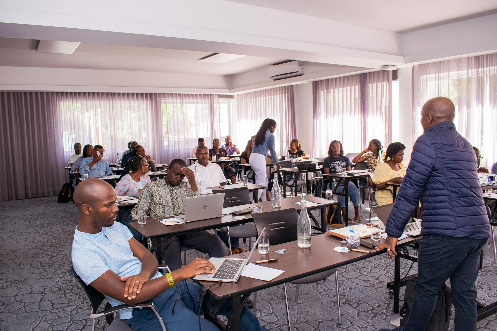

Bridging Science and Sustainability.
The EED Research Institute is dedicated to pioneering ecological breakthroughs that inform policy and empower communities across the globe.
Fieldwork across East and Sub-Saharan Africa
Applied research grounded in the communities and institutions our findings are meant to serve.
Four pillars, one interconnected mission
WASH
According to the United Nations, about 2.2 billion people globally still lack access to safely managed drinking water, 4.2 billion lack access to safely managed sanitation, and 3.0 billion lack access to basic home handwashing services. While global access to Water, Sanitation, and Hygiene (WASH) services has improved since the launch of the Sustainable Development Goals, much still needs to be done.
Read more →Energy
Sustainable Development Goal #7 aims to ensure access to affordable, reliable and modern energy services for all by 2030. In Africa, 900 million still lack access to clean cooking solutions and about 600 million do not have access to reliable electricity — a colossal challenge that needs to be addressed in less than 10 years if SDG-7 is to be achieved.
Read more →Climate Change
The concentration of atmospheric carbon dioxide exceeded 414 parts per million in 2019. Without drastic, concerted and urgent action, it is likely that the earth will experience a temperature rise of up to 1.5°C relative to pre-industrial averages by 2100. These numbers mean little to nothing among pastoralists, fisherfolk and small-scale farmer groups who are already experiencing rapid societal and livelihood changes driven by climate variability as well as other confounding factors.
Read more →Agriculture
Agriculture is the main source of livelihood for most households in sub-Saharan Africa (SSA), employing more than 60% of the total population, and contributing about 23% of the region's total Gross Domestic Product (GDP). Agriculture in SSA is primarily rainfed, with only 6% of farmlands having access to irrigation. SSA's 33 million smallholder farmers are increasingly vulnerable to climate change impacts.
Read more →How we work
Four organizational competencies cut across every thematic area, from the evidence base through to implementation.
Integrated Systems Modeling & Data Analytics
We apply advanced geospatial mapping, AI-driven predictive models, and integrated resource nexus frameworks (Water-Energy-Food-Climate) to underpin every sector. We generate the granular, open-source evidence base required for scenario-testing, trade-off analysis, and strategic planning.
Policy Architecture, Regulatory Design & Institutional Capacity
We translate technical evidence into actionable, enforceable frameworks. Our approach co-designs regulatory roadmaps, tariff structures, accountability mechanisms, and inter-ministerial coordination protocols. We strengthen local institutions, utilities, and government agencies across all sectors to ensure that policies are not just drafted, but effectively implemented, monitored, and adapted over time.
Blended Finance, De-risking & Market Systems Development
We bridge the gap between public mandates and private capital by structuring blended-finance vehicles, results-based financing (RBF), carbon/water credit mechanisms, and risk-mitigation instruments (guarantees, insurance). Our market systems approach catalyzes viable supply chains, ensuring financial sustainability beyond donor cycles.
Human-Centered Design, Gender Equity & Adaptive Management
We place end-users, vulnerable groups, and local communities at the core of every intervention. Using participatory co-creation, behavioral diagnostics, and gender-disaggregated data, we design solutions that are culturally appropriate and socially inclusive.
Institute Milestones
Founded
EED Research Institute is established with a mandate to advance evidence-based research across WASH, energy, climate, and agriculture.
First facility grants
First Kawisafi Technical Assistance Facility (TAF) grants disbursed; 150+ ongoing research initiatives launched across the region.
Active in 47 countries
Four key thematic pillars anchor our work across WASH, energy, climate and agriculture, supported by a growing multidisciplinary team of researchers, scientists, and strategists.
Become a Partner
We collaborate with organizations, institutions, and changemakers to accelerate sustainable solutions through research, innovation, and shared action. Join us in shaping a more sustainable future.